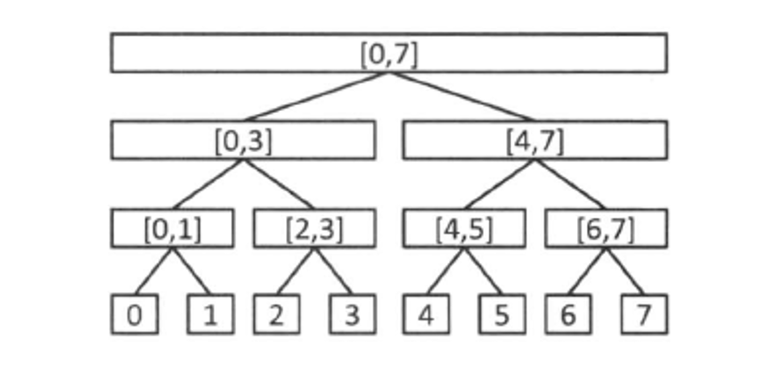
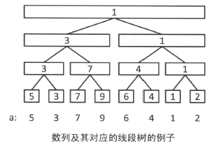
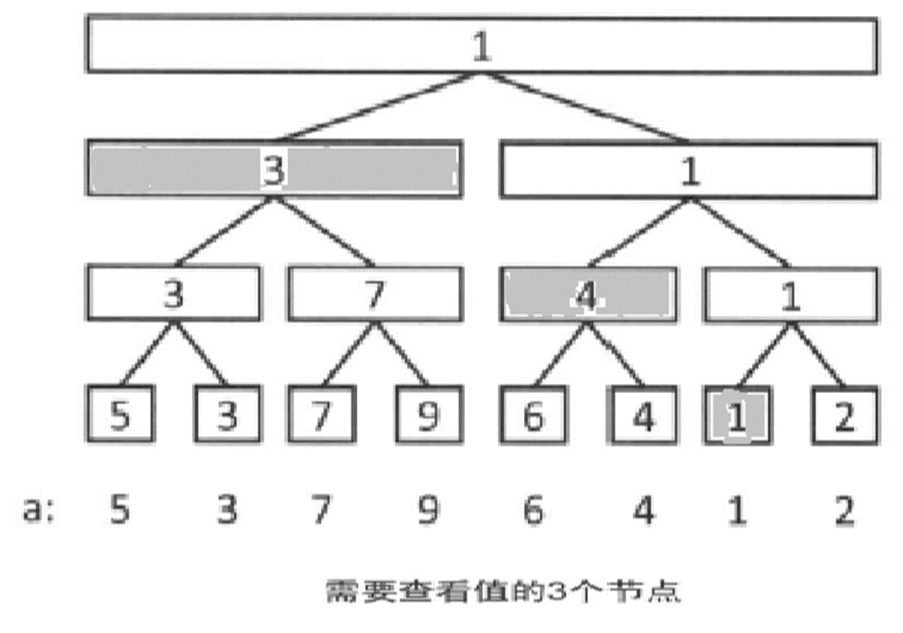

线段树
介绍
线段树是用来处理在序列上单点修改区间询问（或是区间修改，单点询问，甚至是区间修改、区间询问）的问题的一种数据结构。
相比于朴素算法 O(nm) 时间复杂度，线段树能在 O(mlogn) 的时间复杂度下解决问题。
概念
线段树是一棵二叉树，线段树上每个节点对应的是序列的一段区间。如下图所示：

容易发现，根节点对应的是 \([0,n-1]\) 整个区间。若一个节点对应的区间为 \([l,r]\) ，当 \(l=r\) 时它是一个叶节点，没有左右儿子；否则它一定有两个儿子，令 \(mid=(l+r)/2\)，则左儿子对应的区间为 \([l,mid]\) ，右儿子对应的区间为 \([mid+1,r]\) 。
令线段树的高度（层数）为 \(h\) ，那么不难看出 \(h\) 只有 \(O(\log_2{n})\) 级别。
例题
题目描述
给定序列 \(a_0,a_1, \dots ,a_{n-1}\)，接下来有 \(m\) 次操作，操作有两种，给定 \(i,x\) 将 \(a_i\) 修改为 \(x\) ，或是给定 \(l,r\) ，求区间 \(l,r\) 内序列的最小值。
这是线段树的一个最简单的应用。下面以单点修改，区间询问最小值为例，来介绍一下线段树如何工作。
初始建树
设序列 \(a=\{5,3,7,9,6,4,1,2\}\) ，我们将原序列的线段树构建出来，对应的区间最小值如下图：

可以看到，线段树上每个节点维护了它所对应的区间的最小值。
我们可以用简单的递归来得到这棵初始线段树，即用 build(k,l,r) 来表示当前要构建区间 \([l,r]\) 的线段树，\(k\) 表示区间 \([l,r]\) 所对应的标号，
- 若
l=r则我们可以直接构建一个叶节点，它的区间最小值就是a[l]； - 否则我们新建一个节点，它的两个子节点可以通过
build(k*2,l,mid)与build(k*2+1,mid+1,r)来递归得到，它的区间最小值就是两个儿子的区间最小值中的较小者。
因为节点个数是 n*2 级别的，所以这个过程是 O(n) 级别的。
需要特别注意的是，用上述标号方法，线段树的数组要开到 4*n 级别。
- 理由：线段树的层数 \(=\lceil \log_2{n}\rceil +1\) ，最坏情况接近 \(\log_2{n}+2\)。最后一层的最大标号可能为 \(2^{层数}-1\)，就是接近 \(2^{log_2{n}+2}-1\) ，即接近 \(4n-1\) 。
void build(int k,int l,int r) //k表示当前节点的编号，l,r为当前节点所代表的区间
{
if(l==r) //当前节点为叶子节点
{
mi[k]=v; //对应区间的最小值为原序列中的对应值
return;
}
int mid=(l+r)/2;
build (k*2,l,mid); //构造左子树
build (k*2+1,mid+1,r); //构造右子树
mi[k]=min(mi[k*2],mi[k*2+1]); //自下向上更新
}
区间询问操作
若要询问区间 \([0,6]\) ，我们只需要用到下图中的三个节点的信息：

考虑怎样提取这些区间。我们可以递归处理这个求解过程。
初始时访问根节点，接下来当前访问节点所对应区间与询问区间的关系有三种情况：
- 当前区间与询问区间完全无交集，那么此时可以直接返回一个不影响答案的极大值，不继续递归（因为子节点肯定也与询问区间无交集）。
- 询问区间完全包含当前区间，那么直接返回当前节点所维护的区间最小值（因为这段区间的信息都在这个节点维护好了，不需要递归下去求解）。
- 除了上面两种情况，我们对两个儿子递归处理，返回两个结果中的较小值。
int query_min(int k,int l,int r,int x,int y) //k表示当前节点的编号，l,r为当前区间，x,y为询问区间
{
if(y<l || x>r)
return 2147483647; //若与询问区间完全无交集，返回一个极大值
if(x<=l && r<=y)
return mi[k]; //询问区间在当前区间，返回维护好的最小值
int mid=(l+r)/2;
return min(query_min(k*2,l,mid,x,y),query_min(k*2+1,mid+1,r,x,y));
//否则分别处理左子区间和右子区间
}
单点修改操作
void change(int k,int l,int r,int x,int v) //x为原序列的位置，v为要改为的值
{
if(r<x || l>x)
return ; //当前区间与原序列的位置完全无交集
if(l==r && l==x) //当前节点为对应的叶子节点
{
mi[k]=v; //修改叶子节点
return;
}
int mid=(l+r)/2;
change(k*2+1,mid+1,r,x,v); //修改右子区间
change(k*2,l,mid,x,v); //修改左子区间
mi[k]=min(mi[k*2],mi[k*2+1]); //更新相关的值
}
延迟标记
有时我们需要解决的不只是单点修改区间询问，而是区间修改区间询问。以区间内所有数同时加上一个值，以及单点询问某位置的值为例。考虑在每个节点上维护一个值 add ，表示这个节点所对应的区间内的所有数都加上了 add 。区间修改时将区间拆成许多子区间，并在线段树对应的节点上修改。
根节点到叶节点 \([i,i]\) 的路径上会经过所有包含 \(i\) 点的区间所对应的节点，并且路径上所有点也都包含 \(i\) 这个位置，因此我们将所有路径经过的节点的 add 加起来就是位置 \(i\) 目前的值。
//区间修改 + 标记
void modify(int k,int l,int r,int x,int y,int v) //区间[x,y]内所有数加上v
{
if(l>y || r<x)
return; //若完全无交集，直接退出
if(l>= x && r<=y) //完全包含
{
add[k]+=v; //标记
return;
}
int mid=l+r>>1;
modify(k*2,l,mid,x,y,v);
modify(k*2+1,mid+1,r,x,y,v);
}
//单点查询 + 标记
int query(int k,int l,int r,int p)
{
if(l==r)
return add[k]; //叶子节点
int mid=(l + r)/2;
if(p<=mid)
return query(k*2,l,mid,p)+add[k];
else
return query(k*2+1,mid+1,r,p)+add[k];
//根节点到叶子节点[p,p]的路径上所有点的add的sum之和就是答案
}
再回到区间修改区间查询。
此时上面的那种标记的方法也不能直接使用，因为对这个区间内的数有影响的节点不再只有 O(logn) 个，而是可能有 O(n) 个。
考虑将单点修改区间询问与区间修改单点询问的方法结合起来，对线段树每个节点维护一个标记值 add ，表示区间内所有数加上了 add ，并且维护区间内所有数的和 sum ，这样修改与询问时，都能将区间拆为 O(logn) 个小区间并在对应的节点上进行处理。
标记下传
修改操作时我们找到对应的节点，修改 add ，并且更新节点的 sum 值。
此节点的祖先都能用 sum[k]=sum[k*2]+sum[k*2+1] 来得到当前修改后正确的区间和。但是子节点的区间和我们无法立即更新。
解决的方案是当我们需要用到这些子节点的信息时再进行更新。就是当我们要从某个节点递归下去时，将当前节点的add值下传，更新两个子节点的 add 与 sum 值，并将当前节点的 add 值清零。
这样操作后，当我们访问到一个节点时，根节点到它的路径上的标记值影响，都已经通过标记下传操作更新到它的 sum 上了。因此它的 sum 值就是现在它所对应的区间的和。
需要注意的就是当需要递归子节点时一定要将标记下传，保证访问某个节点时，它的祖先节点不存在任何标记。
总时间复杂度仍然是 O(mlogn) 。
//标记
void Add(int k,int l,int r,int v) //给定区间[l,r]所有数加上v
{
add[k]+=v; //打标记
sum[k]+=(r-l+1)*v; //维护对应的区间和
return;
}
//标记下传
void pushdown(int k,int l,int r,int mid)
{
if(add[k]==0)
return; //若没有标记，就不用考虑
Add(k*2,l,mid,add[k]); //下传到左子树
Add(k*2+1,mid+1,r,add[k]); //下传到右子树
add[k]=0; //清零标记
}
//区间加 - 标记
void modify(int k,int l,int r,int x,int y,int v) //给定区间[x,y]所有数加上v
{
if(l>=x && r<=y)
return Add(k,l,r,v);
int mid=l+r>>1;
pushdown(k,l,r,mid); //注意到达每一个节点都要下传标记
if(x<=mid)
modify(k*2,l,mid,x,y,v);
if(mid<y)
modify(k*2+1,mid+1,r,x,y,v);
sum[k]=sum[k*2]+sum[k*2+1]; //下传后更新当前正确的sum值
}
//区间查询 - 标记
int query(int k,int l,int r,int x,int y) //询问区间[x,y]的和
{
if(l>=x && r<=y)
return sum[k];
int mid=l+r>>1,res=0;
pushdown(k,l,r,mid); //下传标记
if(x<=mid)
res+=query(k*2,l,mid,x,y);
if(mid<y)
res+=query(k*2+1,mid+1,r,x,y);
//这里不需要更新区间和，因为子节点没有发生修改
return res;
}
参考代码
区间修改，区间查询（指针版）
#include <bits/stdc++.h>
using namespace std;
struct Node{
int Left,Right; //左右端点
Node *LeftChild,*RightChild; //左右孩子
int sum,delta; //维护整棵子树上的数之和 + lazy-tag（懒标记）
}node;
void build(Node *cur,int l,int r) //构造
{
cur->Left=l; //区间左端点
cur->Right=r; //区间右端点
cur->sum=0; //(*)维护一个sum存放整棵子树上的数之和
if(l+1<r) //如果不是初等区间，那么继续递归构造
{
cur->LeftChild=new Node;
cur->RightChild=new Node;
build(cur->LeftChild,l,(l+r)/2);
build(cur->RightChild,(l+r)/2,r);
}
else
cur->LeftChild=cur->RightChild=NULL;
}
void update(Node *cur)
{
cur->LeftChild->sum+=cur->delta*(cur->LeftChild->Right-cur->LeftChild->Left); //左孩子的值更新
cur->RightChild->sum+=cur->delta*(cur->RightChild->Right-cur->RightChild->Left); //右孩子的值更新
cur->LeftChild->delta+=cur->delta; //标记下传
cur->RightChild->delta+=cur->delta; //标记下传
cur->delta=0; //标记清除
}
int query(Node *cur,int l,int r) //查询
{
if(l<=cur->Left && cur->Right<=r+1) //如果查询区间覆盖了当前节点 => l c->L c->R r
return cur->sum; // 即当前节点在输入的范围内
else
{
if(cur->delta!=0) //(*)查询时也需要信息下传
update(cur);
int ans=0; //记录左右子树 sum 的和
if(l<(cur->Left+cur->Right)/2) //如果查询到了当前节点左孩子 即 其有一部分在左子树
ans+=query(cur->LeftChild,l,r); //继续往下搜
if(r>=(cur->Left+cur->Right)/2) //同理
ans+=query(cur->RightChild,l,r);
return ans;
}
}
void change(Node *cur,int l,int r,int delta) //修改
{
if(l<=cur->Left && cur->Right<=r+1) //如果被修改的区间覆盖了当前节点 => l c->L c->R r
{
cur->sum+=delta*(cur->Right-cur->Left); //(*)更新sum
cur->delta+=delta; //(*)累积修改，暂不下传
}
else
{
if(cur->delta!=0) //(*)如果有待下传的累积
update(cur); //标记下传
if(l<(cur->Left+cur->Right)/2) //如果要修改当前节点左孩子 即 其有一部分在左子树
change(cur->LeftChild,l,r,delta);
if(r>=(cur->Left+cur->Right)/2) //同理
change(cur->RightChild,l,r,delta);
cur->sum=cur->LeftChild->sum+cur->RightChild->sum; //(*)注意别漏了
//递归结束后需要用子树的信息来更新当前节点
}
}
int main()
{
char ch;
int l,r,x;
build(&node,1,5); //构造，左闭右开区间 [1,101)
while(1)
{
cin>>ch;
if(ch=='c') //Change
{
scanf("%d %d %d",&l,&r,&x);
change(&node,l,r,x); //修改: 将 l~r 加上y
}
if(ch=='q') //Query
{
scanf("%d %d",&l,&r);
printf("%d\n",query(&node,l,r));
}
// printf("%d\n%d %d\n",node.sum,node.LeftChild->sum,node.RightChild->sum); //node的左右端点值 检查 [1,5)
// printf("%d %d ",node.LeftChild->LeftChild->sum,node.LeftChild->RightChild->sum); // [1,3) [3,5)
// printf("%d %d\n",node.RightChild->LeftChild->sum,node.RightChild->RightChild->sum); // [1,2) [2,3) [3,4) [4,5)
}
}
注：部分资料来源于百度百科

This work is licensed under a Creative Commons Attribution-NonCommercial-NoDerivatives 4.0 International License.